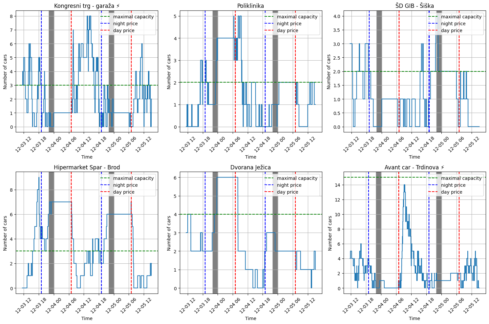

Avant2Go is a car-sharing service that operates using a one-way sharing system. Clients can pick up cars at any of 160 stations in Ljubljana and return them to any station. However, there are instances where a customer cannot pick up a car at their desired station because no cars are available. Similarly, customers may encounter situations where they cannot return a car to their desired station because the parking lot is full. In such cases, customers must drive to a nearby station, which negatively impacts customer satisfaction and may lead to churn.
Avant2Go employs a team responsible for relocating cars from areas with low demand to areas with higher demand. The current challenge they face is predicting which stations will receive returning cars between 22:00 and 24:00 so they can make space at those stations for the incoming vehicles. Additionally, they need to determine to which stations cars should be moved in the morning to ensure availability for clients.
To address this problem, data from the API at https://api.ontime.si/api/v1/avant2go/ will be utilized. The dataset includes the number of free spaces, reservable cars, and reserved cars for each Avant2Go station. Data has been collected every 30 seconds and stored in a database.
For this task, data from six parking spots will be analyzed:
- Kongresni trg - Garaža
- Poliklinika
- ŠD Gib - Šiška
- Hipermarket Spar - Brod
- Dvorana Ježica
- Avant Car - Trdinova
Model definition
The number of cars at parking spot \(i\)\(S_i(t)\) w is modeled as a random walk driven by Poisson arrival processes. Cars and clients arrive according to rates \(\lambda_{car}\) and \(\lambda_{customer}\) respectively:
1. When clients arive to parking spot to pickup up a car, \(S_i(t)\) decreases by one: \[S(t)=S(t-1)-1.\]
2. Conversely, when a car arrives at the parking spot, \(S_i(t)\) increases by one: \[S(t)=S(t-1)-1.\]
Each parking station has unique arrival rates for cars \(\lambda_{car}\) and clients \(\lambda_{customer}\). For example:
- \(\lambda_{car}=2\) cars/hour
- \(\lambda_{customer}=3\) clients/hour
Figure Figure 1 illustrates the evolution of \(S_i(t)\) over a two-day period across six stations, highlighting the interplay between car and client arrivals at each location.
Code
import pandas as pdimport matplotlib.pyplot as pltdata = pd.read_csv("avant_parking_5_12_2024.csv")data["location_name"].unique()data["avant_id"].unique()# Time is given in utc timedata['created_date'] = pd.to_datetime(data['created_date']) + pd.Timedelta(hours=1)
# Prepare function that will plot def is_nighttime(timestamp):"""Check if a timestamp is between 22:00 and 12:00."""return timestamp.hour >=22and timestamp.hour <24# Create a 2x3 grid of plotsunique_ids = data["avant_id"].unique() # Get unique IDsfig, axes = plt.subplots(2, 3, figsize=(15, 10)) # Adjust figure sizeaxes = axes.flatten() # Flatten the 2D array of axes for easy indexingfor i, (avant_id, ax) inenumerate(zip(unique_ids, axes)): plot_data = data[data["avant_id"] == avant_id]# Create the step plot ax.step( plot_data['created_date'], plot_data['reservable_cars'] + plot_data['reserved_cars'], where='post', )# Shade nighttime regions (22:00 to 12:00)for j inrange(len(plot_data) -1): start = plot_data['created_date'].iloc[j] end = plot_data['created_date'].iloc[j +1]if is_nighttime(start) or is_nighttime(end): ax.axvspan( start, end, color='gray', alpha=0.2 )if avant_id in max_capacity_mapping: max_capacity = max_capacity_mapping[avant_id] ax.axhline(max_capacity, color='green', linestyle='--', label='maximal capacity')# Add vertical lines at 7:00 and 19:00for timestamp in plot_data['created_date']:if timestamp.hour ==7and (timestamp.minute ==0or timestamp.minute ==1): ax.axvline(timestamp, color='red', linestyle='--', label='day price'if'day price'notin ax.get_legend_handles_labels()[1] else"")if timestamp.hour ==19and (timestamp.minute ==1or timestamp.minute ==0): ax.axvline(timestamp, color='blue', linestyle='--', label='night price'if'night price'notin ax.get_legend_handles_labels()[1] else"")# Customize the plot ax.tick_params(axis='x', labelrotation=45) ax.set_xlabel('Time') ax.set_ylabel('Number of cars') ax.set_title(f'{name_mapping[avant_id]}') handles, labels = ax.get_legend_handles_labels() ax.legend(handles, labels, loc='upper right') ax.grid(True)# Hide any unused subplotsfor ax in axes[len(unique_ids):]: ax.axis('off')# Adjust layoutplt.tight_layout()# Show the entire gridplt.show()

Figure 1: Arrivals and departures from parking spots
Code
Figure @fig-polar illustrates the evolution of $S_i(t)$ over a two-day period across six stations, highlighting the interplay between car and client arrivals at each location.
On figures it can be seen that parking spots demonstrate different random behaviours. For example we can see that stations “Hipermarket Spar-Brod” and “Dvorana Ježica” demonstrate high demand for cars (high \(\lambda_{customer}\)) in the morning meanwhile there arrival rate of cars, \(\lambda_{car}\) is low. Consequently number of cars on the station falls to zero. On the other hand we can see that \(\lambda_{car}\) to station “Kongresni trg -garaža” is high and \(\lambda_{customer}\) is low, which results in bigger amount cars in the morning. On station “Poliklinika” we can see that \(\lambda_{car}\) and \(\lambda_{customer}\) are both days balanced for about 3 hours. After that \(\lambda_{customer}\) becomes higher, what results in drop of \(S(t)\). From this we can conclude that arrival rates of cars and arrival rates of customers to stations are influenced by time component. If \(\lambda_{car}> \lambda_{customer}\), \(S(t)\) will probably grow, meanhwile if \(\lambda_{car}< \lambda_{customer}\), \(S(t)\) will fall. Since customers and cars are arriving to he station accordingly to the poisson process, we can estimate expected value of \(S(t)\), \(E(S(t))\) which is equal to \[E(S(t))=max(S(0) + (\lambda_{car} - \lambda_{customer})t,0).\] With this formula we can also estimate the expected number of cars on any parking lot.
The main findings and results
This formula will also help us estimate the expected number of cars after the morning rush and create an effective strategy for car relocation at 22:00.
To do so, we need to calculate \(\lambda_{car}\) and \(\lambda_{customer}\) for different times between 22:00 and 9:00. From the graphs, it is apparent that cars are mostly idle between 24:00 and 6:00, so we will calculate \(\lambda_{car,22-24}\), \(\lambda_{customer,22-24}\), and \(\lambda_{car,6-9}\), \(\lambda_{customer,6-9}\).
At 22:00, we have information about \(n\) car drivers on the road (\(X_{active drivers} = X_j, i = 1, ..n\)) and their driving habits. \(\lambda_{car, 22-24}\) could depend on variables related to the drivers. Weather also has a significant impact on car usage, so we could incorporate the weather variable \(X_{weather}\). This leads us to the following formula for the expected number of cars at a parking spot: \[E(S_i(9:00)) = S_i(22:00) + 3(\lambda_{car,22-24}(X_{active drivers}, X_{weather}) - \lambda_{customer,22-24}(X_{weather})) + 3(\lambda_{car,6-9}( X_{weather}) - \lambda_{customer,6-9}(X_{weather}))\]
If \(E(S_i(9:00))\) is greater than the maximum parking capacity \(max_i\), then \(E(S_i(9:00)) - max_i\) cars should be removed from the parking spot. If \(E(S_i(9:00)) < 1\), then \(1 - E(S_i(9:00))\) cars should be sent to this parking spot.
Suggestions for Optimization and Implementation
From the report, it is evident that parking occupancy depends on the arrival rates of cars and customers. To create an effective strategy, it would be necessary to estimate these two parameters for different times. For an efficient implementation, we could start with data on car reservations, calculating historical arrival rates and correlating them with weather patterns. Since data from multiple years is available, it would be possible to back-test the model effectively. For example, we could estimate parameters using data up to 2022 and validate the predictions against data from 2023 and 2024.
Once the testing methodology is in place, more complex variables could be incorporated, such as driver habits, car battery levels, and the distribution of car models and types at different stations.
For implementation, I would recommend using a Flask API deployed in a Docker container. On request, the API should return the expected number of cars at each parking spot. Results could be displayed on the avant2go map with parking spots. In the background, the API could access a database containing information such as driver profiles, active drivers, live weather data and return updated calculations.